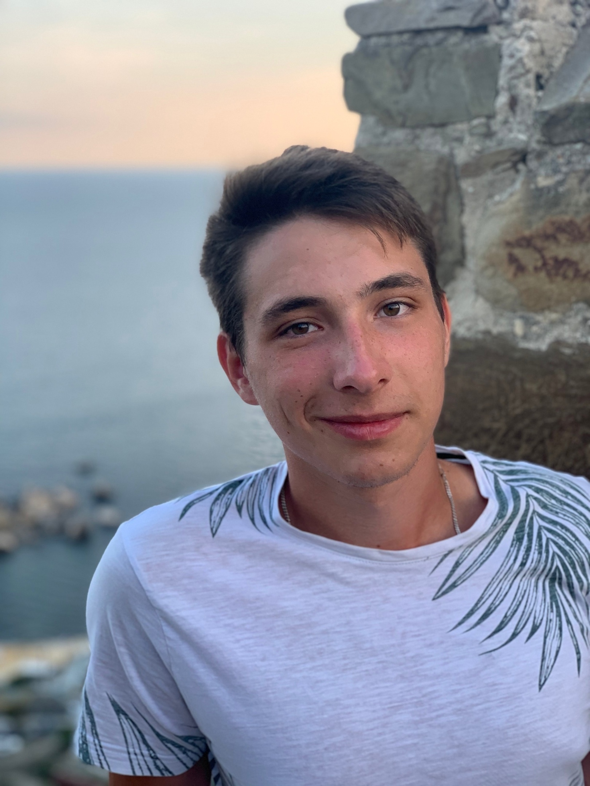

Сергеев Максим Сергеевич
6 октября 2002 года
Родной город Егорьевск, он находится примерно 100 км от Москвы. В этом городе закончил школу, ходил в бассейн, занимался волейболом. После окончания школы поступил в Московский политех. В данный момент учусь на 3 курсе транспортного факультета, также как и в школе, помимо учёбы, продолжаю заниматься волейболом.
Егорьевск — город в Московской области России. Город областного подчинения, административный центр городского округа Егорьевск.
Расположен 80 км к юго-востоку от Москвы, в Мещёрской низменности, на реке Гуслица (приток Нерской). По данным Всероссийской переписи населения 2020 года, на 1 октября 2021 года по численности населения город находился на 226-м месте из 1118 городов Российской Федерации.
Подробнее о городе можно узнать тут